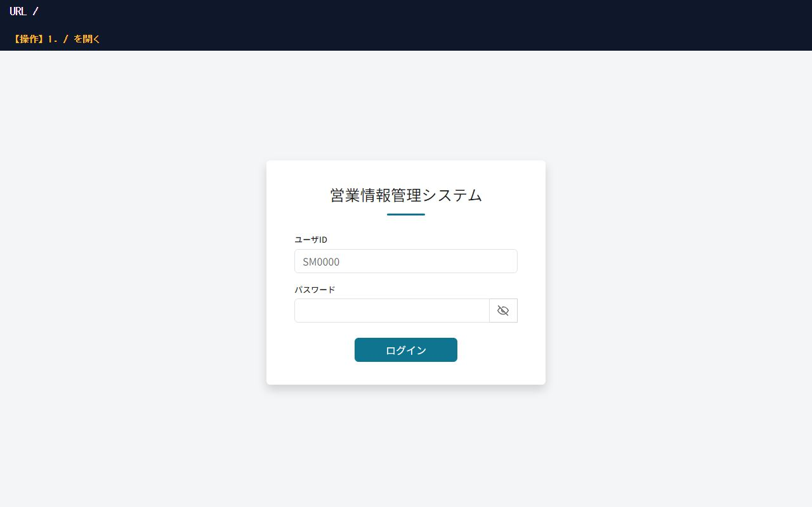
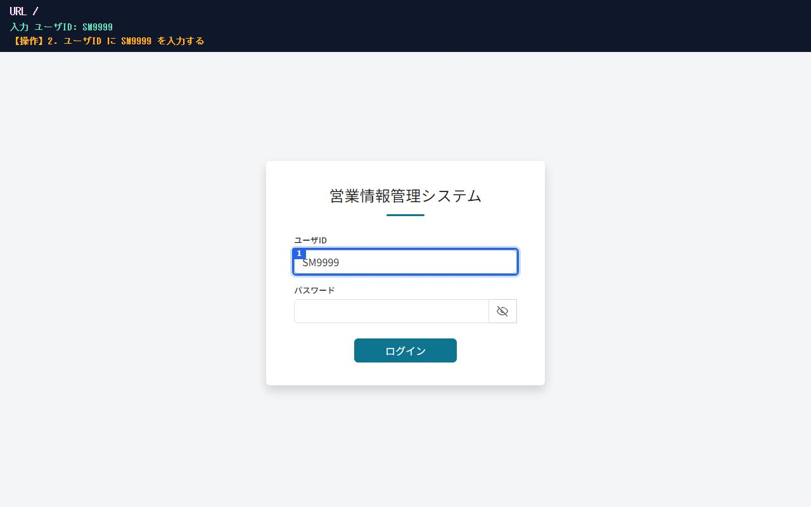
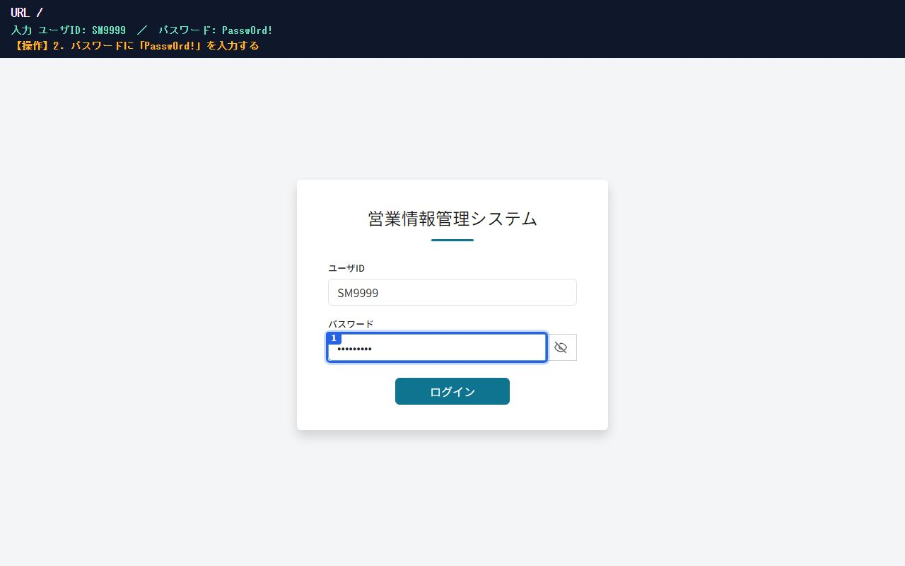
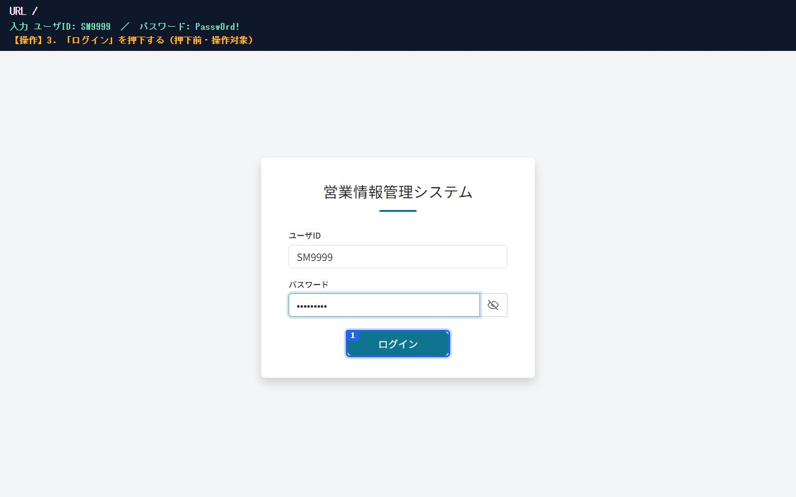
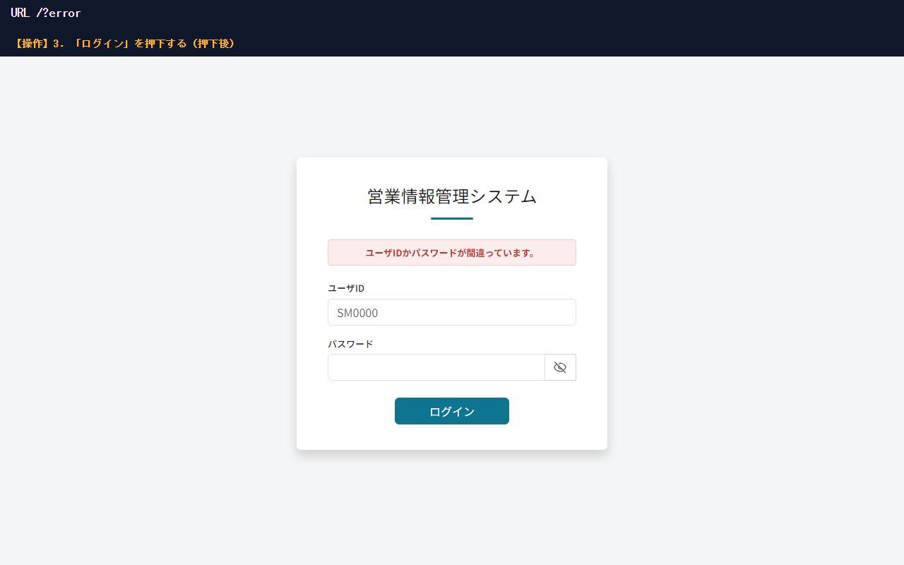
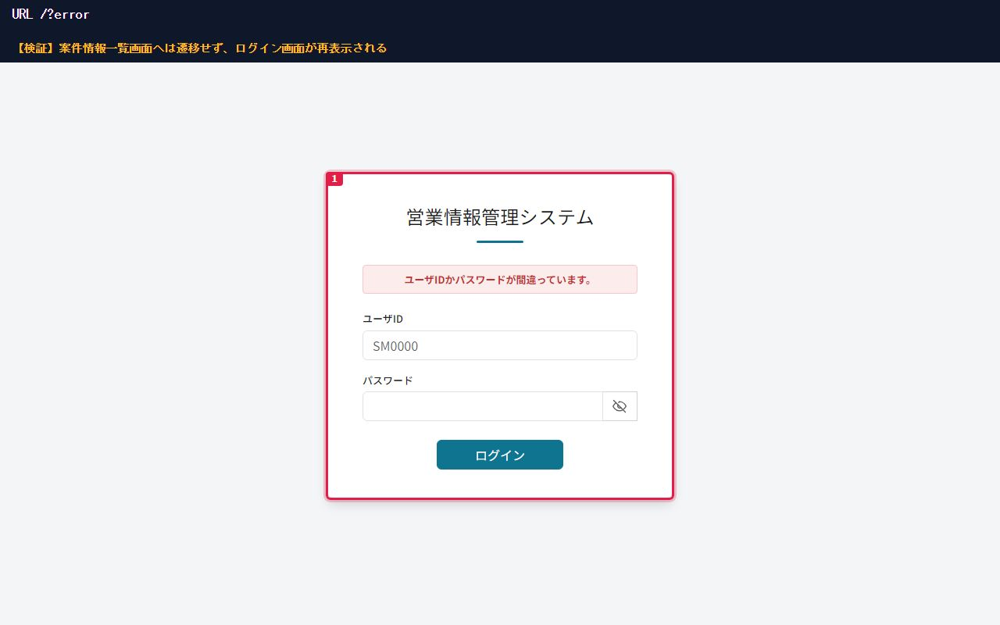
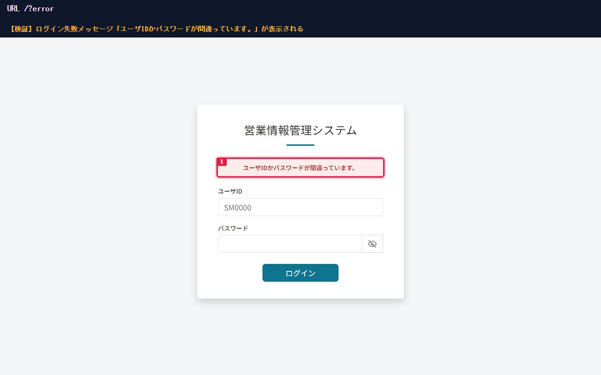
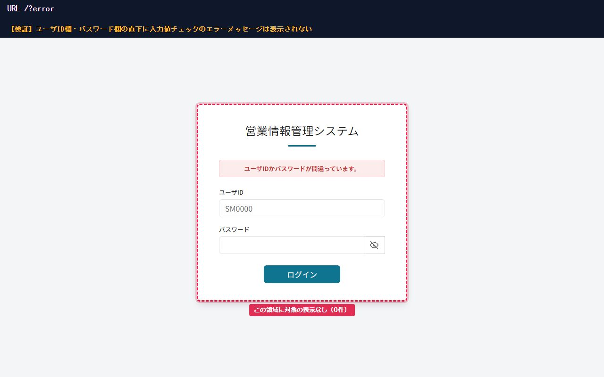
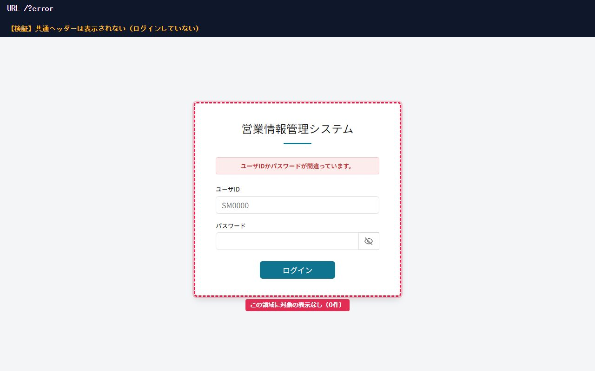

No.3-2
存在しないユーザIDではユーザ認証に失敗し、ログイン失敗メッセージが表示される
PASS









100%
17:59:47.217【操作】1. / を開く
17:59:47.851【操作】2. ユーザID に SM9999 を入力する
17:59:48.473【操作】2. パスワードに「Passw0rd!」を入力する
17:59:48.548【操作】3. 「ログイン」を押下する（押下前・操作対象）
17:59:49.295【操作】3. 「ログイン」を押下する（押下後）
17:59:49.401【検証】案件情報一覧画面へは遷移せず、ログイン画面が再表示される ― 期待: 表示 ／ 実測: 表示 ✓
17:59:49.503【検証】ログイン失敗メッセージ「ユーザIDかパスワードが間違っています。」が表示される ― 期待: ユーザIDかパスワードが間違っています。 ／ 実測: ユーザIDかパスワードが間違っています。 ✓
17:59:49.588【検証】ユーザID欄・パスワード欄の直下に入力値チェックのエラーメッセージは表示されない ― 期待: 文脈要素が可視・対象は0件（表示なし） ／ 実測: 文脈要素が可視・対象は0件（表示なし） ✓
無いことの文脈を示す実在要素（アンカー）を破線枠で図示し、その文脈で対象が存在しないこと（0件）を機械検証
17:59:49.675【検証】共通ヘッダーは表示されない（ログインしていない） ― 期待: 文脈要素が可視・対象は0件（表示なし） ／ 実測: 文脈要素が可視・対象は0件（表示なし） ✓
無いことの文脈を示す実在要素（アンカー）を破線枠で図示し、その文脈で対象が存在しないこと（0件）を機械検証
証跡ログ（14件）
17:59:46.484harnessNAV画面遷移: http://localhost:56735/
17:59:47.217harnessINFO【操作】1. / を開く
17:59:47.801harnessINFO【操作】2. ユーザID に SM9999 を入力する
17:59:48.434harnessINFO【操作】2. パスワードに「Passw0rd!」を入力する
17:59:48.518harnessINFO【操作】3. 「ログイン」を押下する（押下前・操作対象）
17:59:48.631appDEBUGUsersMapper.findByUserId==> Preparing: SELECT user_id, user_name, email, department_id, role, password FROM users WHERE user_id = ?
17:59:48.631appDEBUGUsersMapper.findByUserId==> Parameters: SM9999(String)
17:59:48.631appDEBUGUsersMapper.findByUserId<== Total: 0
17:59:48.749harnessNAV画面遷移: http://localhost:56735/?error
17:59:49.295harnessINFO【操作】3. 「ログイン」を押下する（押下後）
17:59:49.459harnessINFO【検証】案件情報一覧画面へは遷移せず、ログイン画面が再表示される — 期待: 表示 ／ 実測: 表示 ✓
17:59:49.554harnessINFO【検証】ログイン失敗メッセージ「ユーザIDかパスワードが間違っています。」が表示される — 期待: ユーザIDかパスワードが間違っています。 ／ 実測: ユーザIDかパスワードが間違っています。 ✓
17:59:49.648harnessINFO【検証】ユーザID欄・パスワード欄の直下に入力値チェックのエラーメッセージは表示されない — 期待: 文脈要素が可視・対象は0件（表示なし） ／ 実測: 文脈要素が可視・対象は0件（表示なし） ✓
17:59:49.720harnessINFO【検証】共通ヘッダーは表示されない（ログインしていない） — 期待: 文脈要素が可視・対象は0件（表示なし） ／ 実測: 文脈要素が可視・対象は0件（表示なし） ✓